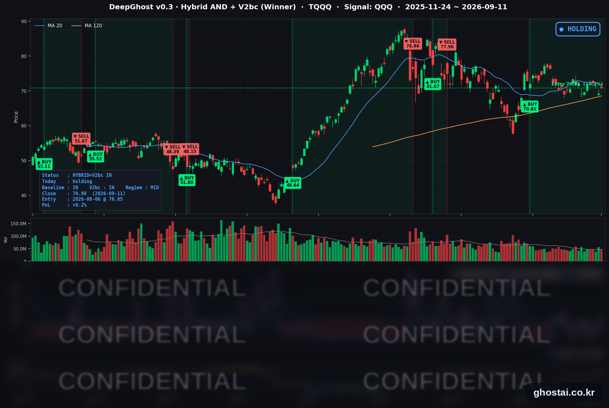

👻 매일 시그널과 히스토리를 홈페이지에서 한눈에 → www.ghostai.co.kr
회원 페이지 안내 — 회원 가입하시면 커버리지 전 종목의 원본 시그널과 분석 레포트를 매일 확인하실 수 있습니다. 회원 페이지는 블로그·유튜브보다 먼저 업데이트됩니다. 선착순 100명을 모집하고 있으며, 이메일과 필명만으로 가입하실 수 있고 무료입니다. 가입 신청 후 운영자 승인을 거쳐 이용하실 수 있습니다.
8월 소비자물가의 근원 지표가 예상을 웃돌아 단기 금리가 올랐지만, 유가가 내려오고 장기물이 안정되면서 지수는 4거래일 연속 하락을 끊었습니다. 다음 주 FOMC회의는 금리를 올릴지를 두고 열립니다.
📊 오늘의 매매 신호
| 항목 | 내용 |
|---|---|
| 오늘 할 일 | ✅ 아무것도 안 해도 됩니다 |
| 포지션 상태 | 📈 TQQQ 보유 중 (IN POSITION) |
| 매수 진입일 | 2026-08-06 (26거래일째) |
| 진입가 → 현재가 | $70.85 → $70.98 |
| 현재 포지션 수익 | +0.18% |
TQQQ 시그널 — IN POSITION
현재 상태: 매수 포지션 유지 중 | 이번 포지션 수익률 +0.18%

나스닥100(QQQ)이 +0.87%, TQQQ는 +2.56% 올라 70.98달러로 마감했습니다. 전략의 평가손익은 전 거래일 -2.31%에서 +0.18%로 다시 플러스가 됐습니다. 8월 6일 진입 이후 오늘로 26거래일째 보유이고, 그중 평가손익이 마이너스였던 날은 7일, 가장 깊었던 날은 8월 24일의 -2.60%였습니다. 진입가 부근을 오르내리는 구간이 한 달 가까이 이어지고 있습니다.
상승분은 개장 전에 만들어졌습니다. QQQ는 전 거래일 종가 대비 +0.95%로 열린 뒤 정규장에서는 -0.08%였고, TQQQ도 갭 +2.86% 뒤 정규장 -0.29%였습니다. 소비자물가가 개장 두 시간 전에 나오는 지표라 하루 방향이 장 시작 전에 사실상 정해졌고, 장이 열린 뒤에는 지수 레벨이 거의 이동하지 않았습니다. 3배 레버리지 상품은 같은 지수 움직임에 세 배 가까이 반응하기 때문에 QQQ의 +0.87%가 TQQQ에서 +2.56%가 됐습니다.
오늘 새로 발생한 매매 신호는 없습니다. 9월 14일(월) 시가에 체결될 주문도 없어 보유가 그대로 이어집니다.
오늘 미국 시장 — 시황 요약
지수 마감
| 지수 | 종가 | 등락률 |
|---|---|---|
| S&P 500 | 7,656.98 | +0.86% |
| 나스닥 종합 | 26,333.04 | +0.96% |
| 다우존스 | 52,573.29 | +0.98% |
| 러셀 2000 | 2,903.94 | +0.45% |
| QQQ (나스닥100) | 714.88 | +0.87% |
| TQQQ | 70.98 | +2.56% |
네 지수 모두 올라 4거래일 연속 하락이 끊겼습니다. 다만 상승분 대부분이 개장 갭에서 나왔습니다 — S&P 500은 갭 +0.59% 뒤 정규장 +0.26%, 나스닥 종합은 갭 +0.80% 뒤 정규장 +0.17%였습니다.
소형주는 장중에 되돌렸습니다. 러셀 2000이 갭 +0.63%로 열린 뒤 정규장에서 -0.18%, 소형주 ETF(IWM)는 갭 +1.05% 뒤 정규장 -0.63%로 마감했습니다. 금리 앞단이 올라간 날 소형주가 상대적으로 약한 전형적인 모습입니다. 주간으로는 네 지수 모두 하락입니다 — S&P 500 -1.17%, 나스닥 종합 -0.94%, 다우 -2.07%, 러셀 2000 -2.17%.
국채 금리 동향
| 만기 | 수익률 | 전 거래일 대비 | 장중 고점(전일 종가 대비) |
|---|---|---|---|
| 3개월 | 3.913% | +6.8bp | +6.8bp |
| 5년 | 4.791% | +5.8bp | +20.7bp |
| 10년 | 4.975% | +3.1bp | +4.1bp |
| 30년 | 5.354% | -0.7bp | +6.3bp |
앞단이 주도해 올랐습니다. 3개월물 3.913%는 2025년 9월 12일 이후 1년 만의 최고 종가이고, 5년물과 10년물은 둘 다 2023년 10월 이후 가장 높은 종가입니다. 반면 30년물만 전 거래일보다 낮게 마감했습니다.
커브가 장중에 크게 튀었다가 되돌아온 하루입니다. 5년물은 장중 +20.7bp까지 올랐다가 +5.8bp로 마감했고, 30년물은 +6.3bp에서 마이너스로 방향을 바꿨습니다. 결과적으로 장단기 스프레드(10년−3개월)는 +106.2bp로 3.7bp, 30년−10년은 +37.9bp로 3.8bp 좁아졌습니다. 역전이 아닌 정상 커브 상태에서 앞단만 더 오른 평탄화입니다.
주식이 오를 수 있었던 직접적인 이유가 여기 있습니다. 앞단이 올랐는데도 지수가 상승한 것은 장기물이 되돌려졌기 때문입니다. 할인율에 민감한 성장주가 이 되돌림의 수혜를 받았고, 나스닥 종합이 다우와 비슷한 폭으로 오른 배경입니다. 앞단이 오르고 장기물이 멈춘 조합은 연준이 지금 긴축해서 나중 물가를 잡을 것이라는 쪽에 가깝습니다.
연준 발언 & 금리 패스
FOMC 블랙아웃 기간이라 9월 11일 위원 발언은 없었습니다. 직전 기준점은 8월 28일 잭슨홀에서 나온 워시 의장 발언으로, "2% 물가 목표는 확고하게 고정된 목표"이며 "지금 가장 우선적인 초점은 물가에 있어야 한다"고 했습니다. 이어 "기저 물가가 목표를 향해 충분한 속도로 가고 있다고 확신할 수 없다면 우리에게는 해야 할 일이 남아 있다"고 덧붙였습니다.
시장이 보고 있는 방향은 인하가 아니라 인상입니다. 현재 정책금리는 3.50~3.75%이고, 9월 25bp 인상 확률은 8월 초 44%대에서 9월 8일 60%대로, 이번 소비자물가 발표 직전 약 69%까지 올라왔습니다. 7월 회의에서 금리를 동결했을 때 표결이 9-3이었고 반대 3표가 모두 인상 쪽이었다는 점도 같은 방향을 가리킵니다. FOMC는 9월 15~16일이며 16일 오후 2시(동부시간)에 결정과 경제전망요약(SEP)이 함께 나옵니다.
오늘의 핵심 이슈
-
8월 소비자물가의 근원 지표가 예상을 웃돌았습니다. 헤드라인은 전월비 +0.4%·전년비 3.4%로 7월과 같았고 예상과도 일치했지만, 식품·에너지를 뺀 근원이 전월비 +0.3%로 예상을 0.1%p 웃돌았습니다(전년비 근원은 2.5%→2.4%). 상승분의 3분의 1 이상이 휘발유 +3.9%에서 나왔고 에너지 전체가 전월비 +2.1%·전년비 +16.3%입니다. 주거비 +0.3%, 식료품 +0.1%은 차분했습니다. 에너지가 물가를 밀어 올리는 구도가 확인된 셈이고, 이번 지표는 FOMC 전 연준이 보는 마지막 물가 지표였습니다.
-
커브가 장중에 크게 움직였다가 되돌아왔고, 30년물만 내려 마감했습니다. 5년물의 장중 등락 폭 22.8bp는 최근 3년 기준 상위 1% 안에 드는 크기입니다. 지표 하나에 금리가 한 번 크게 튀었다가 절반 넘게 되돌린 하루로, 전 거래일 30년물이 2004년 6월 이후 최고 종가였던 것을 감안하면 장기물이 여기서 한 번 멈춘 모양입니다.
-
유가가 되돌려지며 지수가 반등했습니다. WTI가 -2.43% 내린 99.99달러, 브렌트가 -2.98% 내린 104.42달러로 마감했습니다. 이란 국영 매체가 걸프 국가들·오만과 호르무즈 해협을 논의한다고 전한 것이 되돌림의 계기였습니다. 다만 되돌림은 부분적입니다 — 주간으로는 여전히 WTI +9.52%·브렌트 +9.32%입니다.
변동성 & 투자심리
VIX는 15.84(-11.21%)로 내렸습니다. 하루 변화율로는 최근 3년 기준 하위권으로, 지표를 통과하면서 단기 불확실성이 걷히는 전형적인 모습입니다. 다만 9월 3일 저점 14.32보다는 여전히 높습니다.
공포탐욕지수는 32로 공포 구간에 남아 있습니다. 지수가 올랐는데도 심리가 공포 구간을 벗어나지 못한 것은 주간 기준으로는 여전히 하락이고 금리 레벨이 높은 상태라는 점이 반영된 결과로 보입니다.
정리하면 중립입니다. 하루 반등 폭은 컸지만 상승이 개장 갭에 몰려 있었고, 소형주와 AI 하드웨어는 정규장에서 되돌렸습니다. 다음 주 정책 결정 전까지는 방향을 확정하기 어려운 구간입니다.
매크로 & 원자재
| 품목 | 종가 | 등락률 |
|---|---|---|
| WTI 원유 | $99.99 | -2.43% |
| Brent 원유 | $104.42 | -2.98% |
| 금 선물 | $4,390.00 | +0.58% |
| 금 ETF (GLD) | $398.77 | +0.61% |
| 원유 ETF (USO) | $154.90 | -2.20% |
금이 유가 하락에도 오른 것은 실질금리보다 정책 불확실성 쪽에 반응한 결과로 보입니다. 페르시아만 상황이 유가를 통해 물가로 들어오는 경로는 이번 물가 지표에서 그대로 확인됐고, 보도 하나에 유가가 하루 -2.43% 움직였다는 점은 이 경로가 여전히 뉴스에 크게 반응한다는 뜻입니다.
주요 종목 동향
| 종목 | 종가 | 등락률 | 비고 |
|---|---|---|---|
| QCOM | 181.97 | +2.88% | 커버리지 최대 상승, 7월 13일 이후 최고 종가 |
| INTC | 102.94 | +2.61% | 전 거래일 -5.57%의 되돌림, 상승분 대부분이 갭 |
| AMZN | 256.78 | +1.94% | 정규장에서도 상승 지속 |
| NFLX | 77.40 | +1.83% | |
| GOOGL | 338.50 | +1.77% | |
| AAPL | 332.27 | +1.75% | 이틀 연속 상승, 갭보다 정규장 기여가 큼 |
| MSFT | 495.63 | +0.65% | 갭으로만 올라 정규장 보합 |
| META | 648.03 | +0.57% | 갭 +1.34% 뒤 정규장 되돌림 |
| TSLA | 365.44 | +0.52% | |
| AVGO | 361.99 | +0.32% | 갭 +1.22% 뒤 정규장 되돌림 |
| NVDA | 218.29 | -0.03% | 갭 상승분을 정규장에서 모두 반납 |
| MU | 975.26 | -0.22% | 커버리지 최하위, 이틀 연속 하락 |
상하단 격차가 3.10%포인트로 줄었습니다. 전 거래일 9.1%포인트에서 크게 좁혀졌고, 종목별 재료보다 지수 방향이 지배한 하루였습니다. 12종목 중 10개가 올랐습니다.
갈린 것은 정규장 방향입니다. 플랫폼·소비 관련 종목(AMZN·NFLX·GOOGL·AAPL)은 갭 이후 정규장에서도 상승을 이어갔고, AI 데이터센터 관련 종목은 반대로 되돌렸습니다. NVDA는 갭 +1.32%로 열렸다가 정규장 -1.34%, MU는 갭 +1.62% 뒤 정규장 -1.81%, AVGO는 갭 +1.22% 뒤 정규장 -0.89%로 셋 다 같은 모양이었습니다. 하락한 두 종목이 모두 AI 메모리·GPU 쪽입니다.
다음 거래일 일정
- 9월 15~16일(화~수) FOMC + SEP — 16일 오후 2시(동부시간) 금리 결정, 2시 30분 워시 의장 기자회견. 현재 금리 3.50~3.75%에서 25bp 인상 쪽으로 시장이 기울어 있습니다. 2027년 경로까지 담기는 점도표가 함께 나옵니다.
- 9월 16일(수) 8월 소매판매 — 결정 당일 오전에 나옵니다. 에너지 가격이 소비를 잠식하고 있는지 확인할 지표입니다.
- 국제 유가 — 호르무즈 해협 관련 협상 진행 여부. 이번 주 유가가 물가와 주식을 동시에 움직였던 만큼 다음 주도 같은 경로로 볼 필요가 있습니다.
Ghost.AI — Quantitative AI Investment
Model: DeepGhost v0.3 | Transformer-Based Deep Learning
Coverage: 13 tickers | Updated every trading day after US market close
⚠️ 본 자료는 정보 제공 목적으로만 작성되었으며 투자 권유가 아닙니다. 모든 투자의 책임은 투자자 본인에게 있습니다. 과거 성과가 미래 수익을 보장하지 않습니다.
[유의사항]
- 본 서비스는 불특정 다수를 대상으로 발행되는 단방향 정보 제공 서비스이며, 투자자 개인의 재산 상황·투자 목적·위험 선호도를 반영한 개별 투자 조언이 아닙니다.
- 고스트에이아이 주식회사는 고객과 쌍방향 의사소통(개별 상담, 맞춤형 자문 등)을 제공하지 않습니다.
- 본 콘텐츠는 투자 권유 또는 매매 주문의 청약·청약의 권유에 해당하지 않으며, 최종 투자 판단 및 그에 따른 손익의 책임은 전적으로 투자자 본인에게 있습니다.
고스트에이아이 주식회사